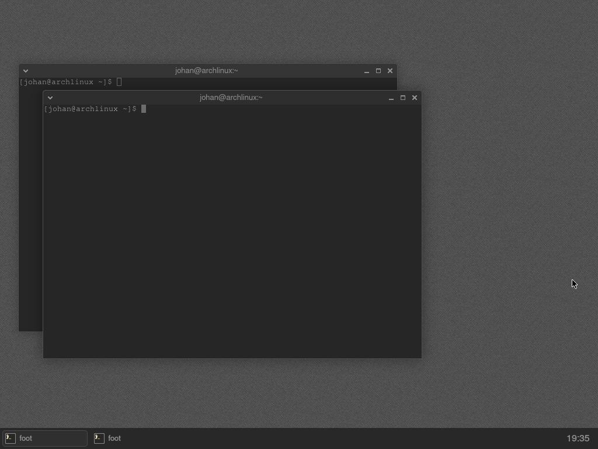
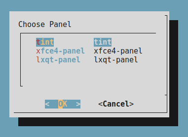
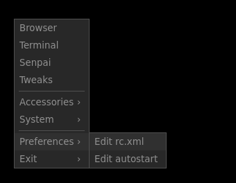
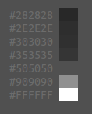

2025.43
freedesktop.org is a great place to draw inspiration when authoring a Desktop Environment. For a start, they host projects upon which labwc and teallach are built, like Cairo, Mesa, Pixman, libinput, wlroots and Wayland. Further, they promote specifications and standards to help DEs co-exist, for example the Base Directory Specification.
First things first, we set
XDG_CURRENT_DESKTOP=teallach;wlroots because otherwise it
does not feel like we are a Desktop Environment. This enables
xdg-desktop-portal and tools like xdg-open
to operate in a teallach centric way. For example, we can now use
teallach-mimeapps.list so that pcmanfm-qt and
others can associate the right apps with files without affecting other
DEs with whom teallach may co-exist.
We use the following wrappers to support setting favorite apps:
tl-web-browser: makes use ofxdg-settings get default-web-browser. We could considerxdg-open https://for this; it is not clear which is better.tl-file-manager: simply runsxdg-open .
We ought to consider something like tl-terminal-exec
too. There does not appear to be anything generic for opening a
terminal. We like xdg-terminal-exec which is packaged on
debian trixie, but weirdly not on Arch.
It is tempting to write our own alternative to xdg-open, but it feels better to just stick with the fd.o standard. slopen would have been quite a nice starting point for this.
Interestingly, for already established DEs, xdg-open
invokes to their respective resource openers (e.g. exo-open
on Xfce). For us, the xdg-open-script
does the hard work (see open_generic()).
2025.42
A spin with trixie.
- Boot the trixie net-install iso
- Choose
installrather thangraphical install - Untick
debian desktop environmentandGNOME - As root, install sudo and run
usermod -a -G sudo <user> - Reboot
- Log in as yourself and do the following:
sudo apt install labwc git pkg-config make gcc scdoc meson dialog swaybg \
foot wlr-randr wtype pyqt6-dev wf-recorder xdg-utils xfce4-panel \
featherpad
# To build+install labwc-tweaks you'll also need the packages listed
# below. You can of course run labwc/teallach without it, but suggest
# just going with it to get a feel for the setup.
sudo apt install cmake qt6-base-dev qt6-tools-dev qt6-wayland-dev \
libglib2.0-dev libxkbcommon-dev libxml2-dev
# We've installed xfce4-panel above, but if you want teallach's tint panel
# you'll additionally need:
sudo apt install layer-shell-qt liblayershellqtinterface-dev libsfdo-dev \
qt6-wayland-private-dev qt6-base-private-dev
mkdir bin
# logout and login again for .profile to add ~/bin to $PATH
git clone https://github.com/teallach-desktop/teallach
cd teallach
./install-subprojects
./configure
make
make install
# In the teallach-welcome script, choose either xfce4-panel or tint depending
# on what you've installed and then hit 'Apply'
teallach-welcome
teallach
# In way of post-installation steps, consider the following:
./contrib/post-installation-01-foot.sh
sudo apt install qt-style-kvantum qt6ct papirus-icon-theme
# - Run qt6ct and set style=kvantum
# - Run kvantummanager, and under 'change theme', choose KvGnomeDark and hit
# 'use this theme'
# - Run labwc-tweaks and set icon-theme=Papirus
# - Finally select 'reconfigure' in the compositor root menu2025.41
@01micko has created a logo for this. Thanks! We have loosely named it shebang-redirect.
2025.38
It appears that not all users like to install things in their
$HOME directory. Teallach can now be install on Arch Linux
like this:
- Boot from an Arch Linux iso
- Run
archinstalland use profileLabwc - Install
git - Download the bootstrap script with
git clone https://github.com/teallach-desktop/bootstrap-arch.git- Run the script with
cd bootstrap-arch ; ./bootstrap.sh - Run
teallach-welcometo populate~/.config/teallach/ - Reboot and choose
Teallachat the display manager prompt (I used SDDM)
Note: All the bootstrap script does is to build arch packages for
tint,labwc-menu-generator,labwc-tweaksandteallachusing the PKGBUILD files in the boostrap repo.

2025.35
So far, teallach consists of only some scaffoldnig. A rough shape is starting to emerge.
This week saw the addition of a rudimentary wallpaper setter client - in a mere 129 lines of python code. We do not need too many helper apps like that, but setting the wallpaper by editing files manually is just hard work.
teallach-nitrogenWe use the Kvantum theme KvGnomeDark.
2025.34
Post-installation Script
It is not great for a packaged program to install files in
$HOME. So when considering how teallach files should be
organised, it seems like a post-installation script is required to write
files like ~/.config/teallach/autostart
teallach-welcome
As this matures, we may consider using the
--merge-config flag and use a script to start the
compositor which first adds /usr/share/teallach/... into
XDG_CONFIG_DIRS.
Theming
Let us favour Server Side Decoration.
2025.33
Menu
We have a menu! It is generated by teallach-menu, which coverts a human-readable menu format (example below) into openbox compliant XML.
item Browser firefox
item Terminal foot
item Tweaks labwc-tweaks
sepr
exec labwc-menu-generator -b -t foot
sepr
menu Preferences
item "Edit rc.xml" "featherpad ~/.config/labwc/rc.xml"
item "Edit autostart" "featherpad ~/.config/labwc/autostart"
menu Exit
conf Reconfigure
exit Logout
Palette
I think this palette looks good. It is not too dissimilar to that of CrunchBang and works fine with Adwaita Dark.

foot -o colors.background=505050
tl-view-palette ~/.local/share/themes/teallach/labwc/palette.txt2025.32
If we start with a bare Alpine Linux installation, how much glue is
needed to turn labwc into something that feels like a
Desktop Environment?
labwc is running on Alpine 3.22 with only the following
packages: doas, labwc,
ttf-dejavu, seatd,
mesa-dri-gallium, dbus, dbus-x11,
xwayland.